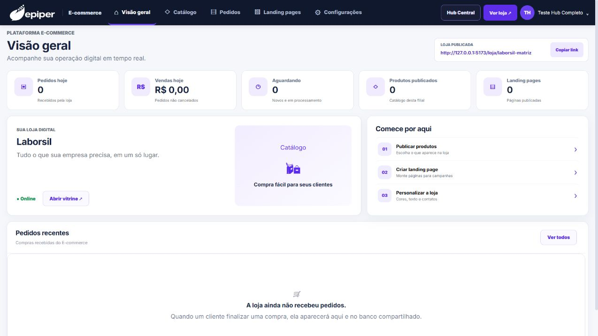

Catálogo por filial
Escolha quais produtos aparecem na loja e mantenha a publicação ligada ao contexto da filial.
Publique um catálogo por filial, receba pedidos e crie páginas de campanha em uma experiência B2B conectada ao núcleo de produtos, clientes e regras comerciais da Epiper.
A gestão fica em uma área administrativa própria; o cliente acessa a vitrine pública da empresa.
Escolha quais produtos aparecem na loja e mantenha a publicação ligada ao contexto da filial.
Configure identidade, textos, contatos e endereço público para oferecer uma vitrine alinhada à marca.
As compras recebidas aparecem no painel e seguem identificadas pelo canal de origem.
Monte páginas específicas para campanhas, ofertas e ações comerciais sem espalhar a operação.
Produtos, clientes, preços, estoque e pedidos podem fazer parte do fluxo integrado. A disponibilidade de dados, checkout, meios de pagamento e retorno de status é confirmada conforme o ERP e o escopo técnico.

Conte qual ERP sua empresa utiliza, como catálogo, preços e estoque funcionam hoje e qual jornada de compra deseja oferecer. A viabilidade de cada etapa é confirmada na análise técnica.